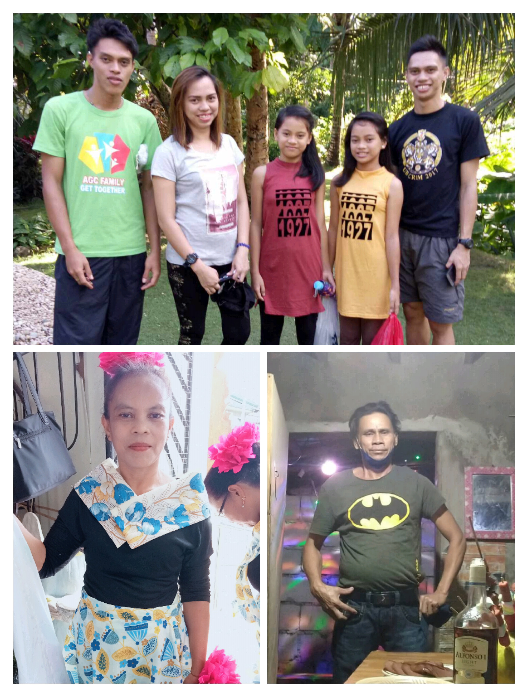
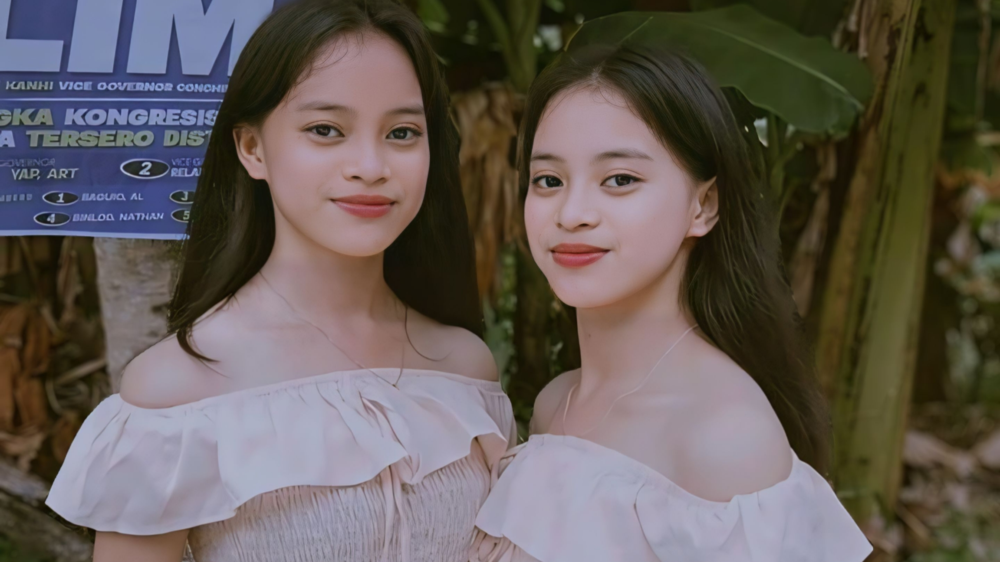
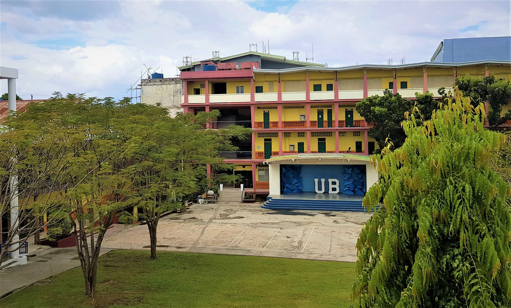

About My Family
In our vibrant household, the heartbeat of our family rhythm is felt through the laughter and love shared between my parents and us five siblings. With two supportive brothers and two caring sisters, including my twin sister who's my partner-in-crime, our home is a bustling hub of connection and camaraderie. Our parents, the guiding lights of our lives, instill in us values of compassion and resilience, shaping us into the individuals we are today. Together, we navigate life's highs and lows, leaning on each other for strength and support, weaving a tapestry of cherished memories and enduring bonds that define us as a family.
Growing up as twins, my bond with my sister runs deeper than words can express. From sharing secrets under our childhood blanket forts to facing life's challenges side by side, she's not just my sister, but my closest confidante and my greatest ally. We've laughed until our stomachs hurt and cried until our tears dried, knowing that no matter what, we have each other's backs. Our connection transcends mere biology; it's a profound understanding forged through years of shared experiences and unwavering support. She's the yin to my yang, the sunshine to my rain, and together, we navigate the complexities of life with a bond that only twins can truly understand.
Education Journey
Before this chapter began, my formative years unfolded at Tabuan National High School, where I cultivated friendships, embraced challenges, and discovered the power of resilience.
From junior to senior high, every lesson learned and every obstacle overcome shaped the person I am today – a relentless seeker of knowledge, an advocate for progress, and a believer in the limitless potential of the human spirit.
As I step into the spotlight of possibility, I invite you to join me on this extraordinary journey, where dreams are not just imagined but lived out in full color.
My quest for knowledge led me to the University of Bohol, where I am currently embarking on the exhilarating journey of a first-year student in Bachelor of Science in Computer Engineering.
It is here, amidst the buzzing halls and bustling classrooms, that I am honing my skills and nurturing my passion for technology. With each line of code and every circuit diagram, I am crafting the blueprint for a future where innovation knows no bounds.
My Circle of Friends
Madi's
Trio
BBFxBF

Close Friend